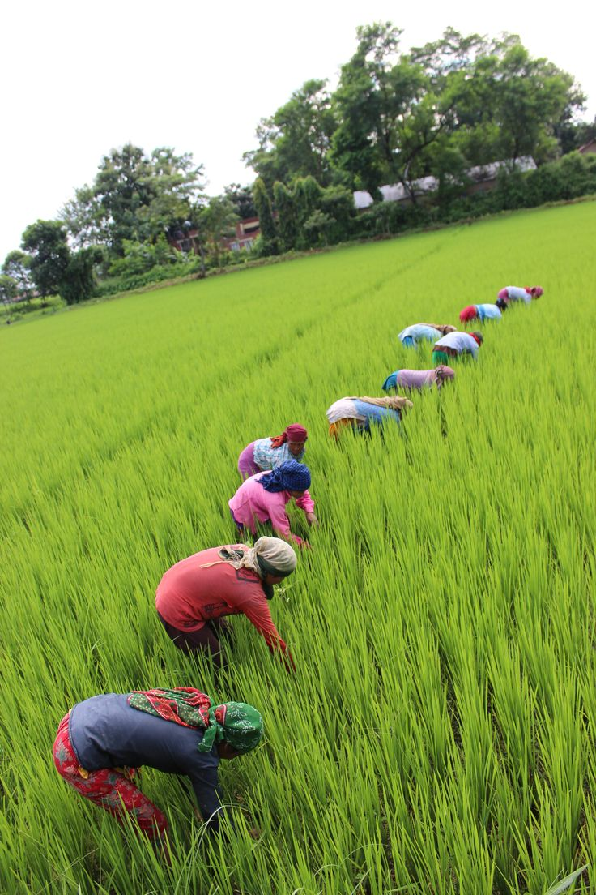
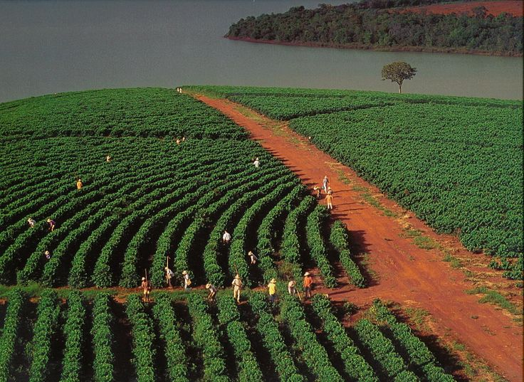
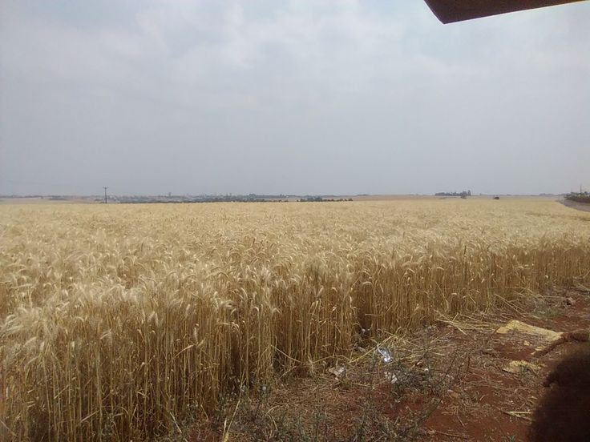

O preço dos produtos da agricultura familiar podem variar de acordo com diversos fatores, dependendo da região, variam entre diferentes estados e municípios, devido a custos de produção, logística e demanda local, o tipo do produto que são mais perecíveis ou com maior demanda podem ter preços mais altos, enquanto outros podem ser mais acessíveis, a época do ano pode influenciar também pois a Safra e entressafra podem afetar a disponibilidade de alguns produtos, impactando seus preços e os locais de comercialização, onde a forma como os produtos são vendidos, seja diretamente com o produtor, em feiras, mercados, supermercados, etc.
O pequeno agricultor Wilson Terceiro, junto com sua família, vendeu mais de 15 toneladas de arroz no primeiro semestre do ano. Com as vendas, eles faturaram cerca de R$ 60 mil.
Wilson cultiva arroz em sua propriedade rural e contou com a ajuda da esposa e dos filhos em todo o processo, desde o plantio até a colheita. Segundo ele, o trabalho em família foi essencial para alcançar esse bom resultado.
“Foi muito esforço, mas valeu a pena. Agora queremos melhorar ainda mais”, disse o agricultor.
O sucesso de Wilson mostra a força da agricultura familiar e serve de exemplo para outros pequenos produtores da região.
Com uma lavoura bem cuidada e atenção especial à qualidade dos grãos, Gomercindo conseguiu um valor acima da média do mercado, resultado de um trabalho focado na sustentabilidade e na valorização do produto final.
A comercialização bem-sucedida da colheita de Gomercindo também movimenta a economia local, fortalecendo o comércio de insumos, transporte e mão de obra rural. A expectativa agora é de que o bom desempenho estimule outros produtores da região a investir em técnicas de produção mais eficientes e sustentáveis.
Com o mercado do café em alta e consumidores cada vez mais exigentes, histórias como a de Gomercindo da Silva demonstram que o campo continua sendo uma das grandes forças da economia brasileira.
Na tranquilidade do interior do Paraná, o senhor Celso segue cuidando da terra com a sabedoria de quem conhece cada detalhe do solo. Ao lado de seus familiares, ele comemora o sucesso da última safra de trigo, que trouxe bons frutos. Foram meses de trabalho árduo, enfrentando o clima imprevisível e os desafios típicos da agricultura. Mas a recompensa veio: a colheita foi farta, e a venda do trigo garantiu um bom rendimento para a família. Com o dinheiro da safra, Celso já planeja pequenas melhorias na propriedade e sonha em ampliar a produção no próximo ano. Mais do que números o que ele celebra é a união da família e o reconhecimento de um trabalho feito com dedicação.
A história de Celso é parecida com a de muitos agricultores do Paraná e do Brasil: gente simples, batalhadora, que faz da agricultura familiar uma base sólida para viver com dignidade e alimentar o país com qualidade.
